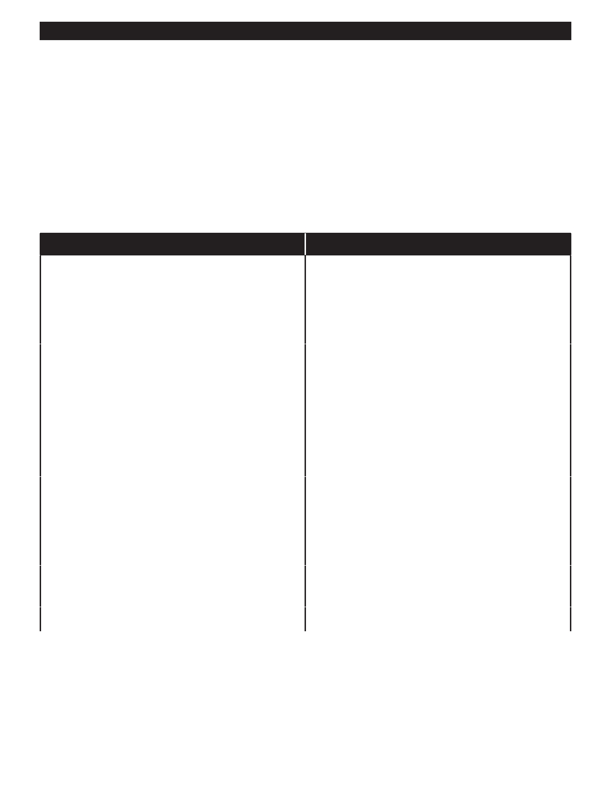

PA RT I C I PA N T R E S O U R C E G U I D E
Common Wall Switch Problems and Solutions
Switches are relatively simple by design, so typically, they work or they don’t.
They also may not work safely, meaning the electricity arcs or sparks in the switch,
which is a potential fire hazard.
Most electrical switches wear out from use in five to 20 years, depending on quality and
frequency of use. Additionally, wires can become loose and not make a connection,
caused by poor installation or other factors.
Problem
Solution(s)
When wall switch is turned on, circuit breaker trips
Tighten loose connections on switch.
or fuse “blows.”
Move plug-in appliances to another circuit.
Test switch and replace, if needed. (Pages 37-43)
Repair or replace bad light fixture.
(Page 64 or Pages 70-71)
Light fixture does not work.
Replace light bulb.
Check for tripped circuit breaker or blown fuse.
(Page 31)
Test switch and replace, if needed.
Repair or replace bad light fixture.
(Page 64 or pages 70-71)
Test for power at fixture, and tighten connections
on switch
Light flickers.
Tighten or replace bulb.
Repair or replace bad light fixture.
(Page 64 or Pages 70-71)
Test switch and replace, if needed. (pages 37-43)
Tighten all connections
Switch should be replaced. (Pages 37-43)
Test switch and replace, if needed. (Pages 37-43)
Move plug-in appliances to another circuit.
Wall switch does not stay ON or OFF.
Replace switch. (Pages 37-43)
35